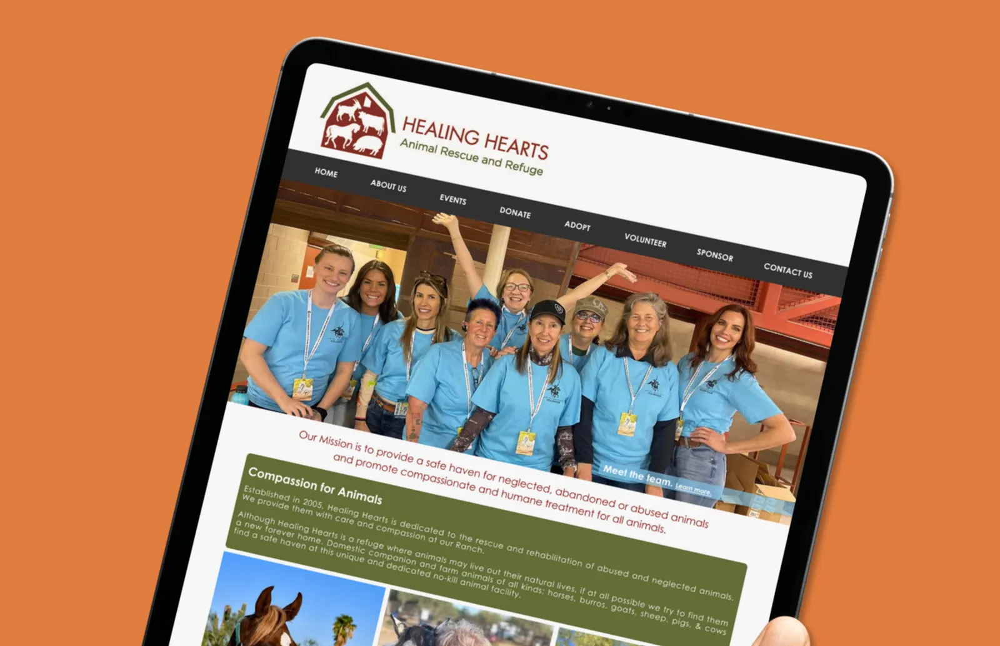
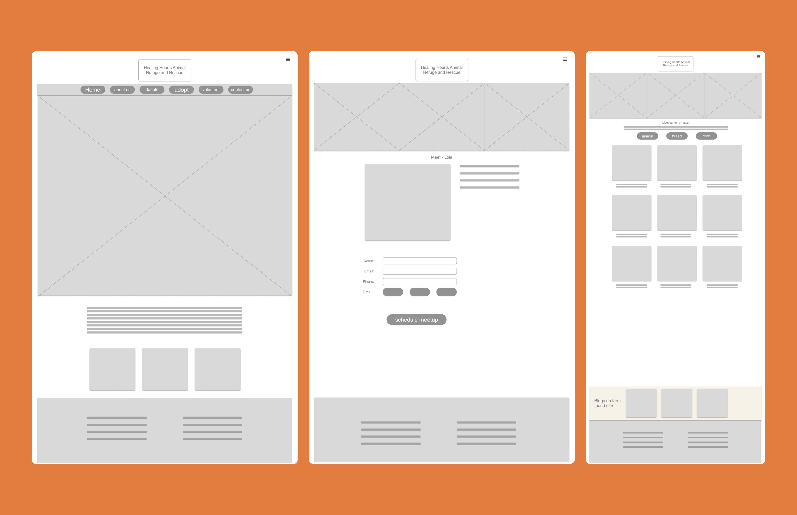

Healing Hearts does incredible work for animals in need. Their website wasn't keeping up. I redesigned it end to end so that the people who wanted to help could actually do it.
The Problem
People came wanting to adopt, donate, volunteer. Most left without doing any of it. The cause was real. The site just wasn't keeping up.
UX Research Process
Not just what looked broken, but why real people were walking away without doing anything.
Went through every page against Nielsen's 10 principles and documented what I found. Each issue got a severity rating so I could focus on what actually mattered first.
Talked to potential adopters, donors, and volunteers through surveys and informal conversations. 10 respondents, a lot of honest feedback.
Ran the site through WCAG 2.1 guidelines. Found contrast failures, missing alt text, and broken form labels that were actively excluding users.
Built 4 personas from real observations: a donor who wants transparency, an adopter who needs details, a volunteer with no time to waste, and a community supporter looking to do more.
Wrote acceptance criteria for each key flow so every design decision had a clear job and could be tested against real user intent.
Ran 3 task scenarios with real participants. Watched where they hesitated, where they got lost, and what made them give up.
Heuristic Evaluation
User Research
came to adopt or volunteer. These two paths were the priority and the site was making them impossible to find.
wanted more information about the animals. Personality, health history, better photos. Enough to actually make a decision.
said they'd recommend the site to others interested in adopting or volunteering. The goodwill was there. The design just needed to match it.
People cared about the animals. They just couldn't figure out how to help. That gap between wanting to act and being able to was exactly what the redesign had to close.
User Personas
Different reasons to show up. Same broken experience standing in their way.
I want to make sure my donation makes a real difference.
I need flexible opportunities that fit around my schedule.
I want to contribute more than money. My time and skills matter too.
I need clear details and steps to make the right choice for my home.
Visual Design
Swapped the original serif for Century Gothic. Rounded, clean, warm. It matched the tone of what Healing Hearts is actually doing without trying to look like something it isn't.
Color Palette
Wireframes
Three paths (adopt, donate, volunteer) needed to be obvious the second someone landed on the page.

High Fidelity Prototype
Three flows, rebuilt from scratch. A clear next step at every point.
Adoption walkthrough
Donation page walkthrough
Volunteer page walkthrough
The Outcome
increase in adoption completion. Clear path + real info = people follow through.
Cleaner nav, clearer hierarchy, consistent structure across every page. No more hunting for the Adopt button.
Fewer fields, a progress indicator, and a confirmation that tells you your gift landed. Simple works.
Real photos, personality notes, medical info, and filters so people could actually find the right match for their home.
One page with all the info: role descriptions, available schedules, and a sign-up form that took under a minute.
"The goal was simple: make it easier for people to connect with the cause, whether they want to adopt, donate, or just learn more."